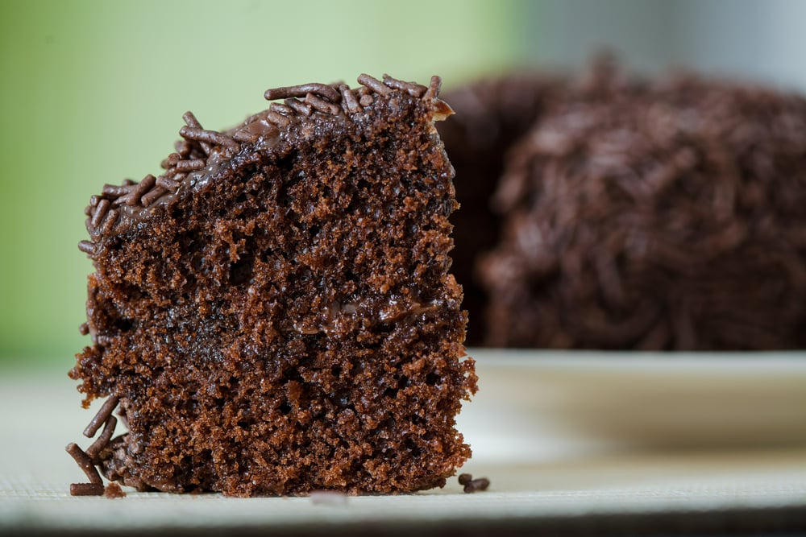
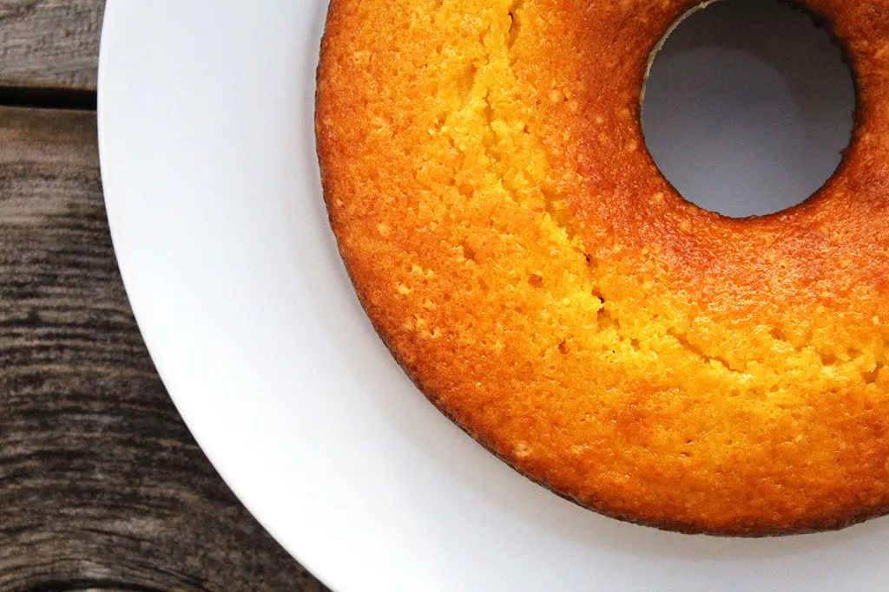

🍰 Receitas Doces
Bolo de chocolate
Esta receita de bolo de chocolate fácil mostra como preparar a massa perfeita
para um bolo de chocolate com ingredientes básicos.
Você pode servir esta receita no café da manhã, ou no lanche da tarde, além de também ser uma
opção de sobremesa rápida para o seu dia a dia.
➜ Ingredientes do bolo:
- 2 xícaras de chá de farinha de trigo;
- 1 xícara de chá de açúcar;
- 1 xícara de chá de chocolate em pó;
- 1 colher de sopa de fermento químico;
- 1 xícara de chá de óleo;
- 3 ovos;
- 1 xícara de chá de água fervendo.
➜ Ingredientes da calda:
- 1 xícara de chá de açúcar;
- 1 xícara de chá de chocolate em pó;
- 1 colher de sopa de margarina;
- 4 colheres de sopa de leite.
➜ Modo de preparo:
- Em um recipiente, adicione a farinha de trigo, o chocolate em pó, o açúcar, o fermento e misture utilizando um fuê;
- Adicione os ovos e o azeite, acrescente um pouquinho da água, e bata na batedeira;
- Depois, vá adicionando a água aos poucos enquanto a massa está batendo;
- Passe a massa para uma forma untada e leve ao forno a 180ºC por 5 minutos;
- Enquanto isso, prepare a calda;
- Em uma panela, adicione o açúcar, o chocolate em pó, a margarina, o leite e misture antes de levar ao fogo;
- Leve ao fogo e misture até atingir o ponto;
- Retire o bolo do forno e espalhe a cobertura por cima;
- Depois, é só se deliciar com essa delícia!
Bolo de fubá com cenoura
Quer fazer um bolo rápido no liquidificador, super fofinho e saboroso? Esse bolo é delícioso, o sabor da cenoura com o fubá fica perfeito! Sem glúten e sem lactose.
➜ Ingredientes do bolo:
- 3 ovos;
- 1 1/2 xícara de açúcar;
- 1 xícara rasa de óleo;
- 2 xícaras de fubá;
- 1/2 xícara de amido de milho;
- 2 cenouras médias;
- 1 colher de sobremesa de fermento.
➜ Modo de preparo:
- Descascar a cenoura e cortar em pedaços. colocar no copo do liquidificador;
- Acrescentar os ovos e o óleo e bater até estar bem homogêneo. Acrescentar o açúcar e bater mais um pouco;
- Adicionar o fubá e o amido e bater até misturar bem;
- Desligar o liquidificador e acrescentar o fermento;
- Untar uma forma de 24 cm de diâmetro com margarina e fubá e despejar a massa;
- Levar para assar em forno pré aquecido a 180 graus por 45 minutos, sempre fazendo o teste do palito;
- Esfriar e desinformar. Fica muito fofinho e o combinação da cenoura e o fubá é perfeito!
Pudim de côco de maria-mole

Se você procura uma receita diferente de pudim, experimente o pudim de côco de maria-mole. A sobremesa leva poucos ingredientes e é fácil de preparar. Fica uma delícia!
➜ Ingredientes para o pudim:
- 1 caixinha de maria-mole de côco;
- 1 lata de leite condensado;
- 2 caixinhas de creme de leite (sem soro);
- 2 vidros de leite de côco - total 400ml;
- 2 pacotes de gelatina em pó incolor (sem sabor) - total 24g;
- 100g de côco ralado hidratado com um pouco de água;
- ¼ xícara de água quente.
➜ Ingredientes para a cobertura:
- 3 barras de chocolate meio amargo;
- 1 caixa de creme de leite.
➜ Modo de preparo:
- Na água quente coloque a maria-mole de côco e a gelatina e mexa;
- Depois de mexer coloque no liquidificador junto com o leite condensado, o leite de côco, o côco ralado e o creme de leite;
- Depois de batido coloque em uma forma, tampe com papel alumínio e leve ao congelador;
- Depois de endurecido colocar a cobertura;
- Derreta o chocolate ralado no micro ondas e misture com o creme de leite;
- Espalhe o creme de leite misturado com o chocolate derretido sobre o pudim.